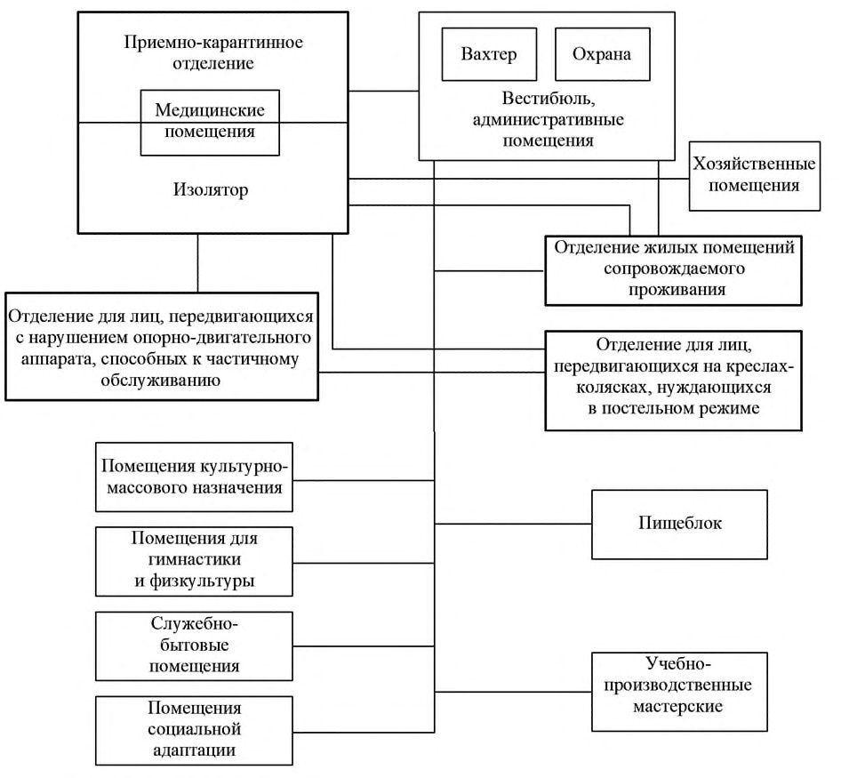
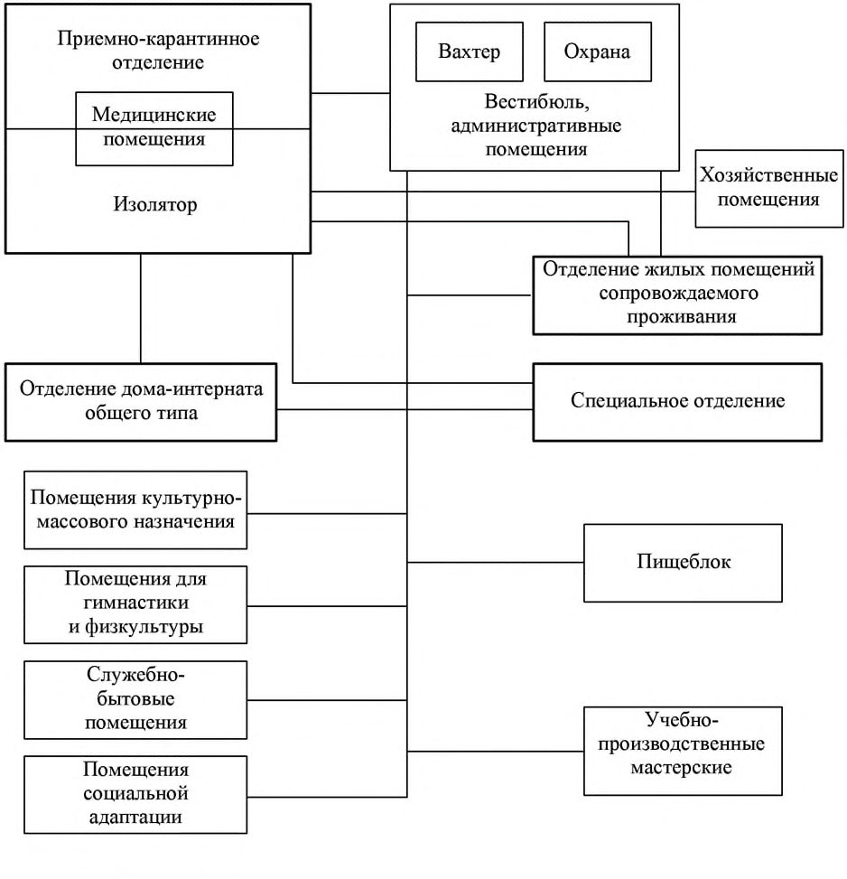

СП 145.13330.2020 «Дома-интернаты. Правила проектирования»
О документе: разработчики, утверждение, регистрация, ключевые слова
СВОД ПРАВИЛ
СП 145.13330.2020
Правила проектирования
Издание официальное
Москва 2020
1 ИСПОЛНИТЕЛЬ - Акционерное общество «Центральный научноисследовательский и проектно-экспериментальный институт промышленных зданий и сооружений» (АО «ЦНИИПромзданий»)
2 ВНЕСЕН Техническим комитетом по стандартизации ТК 465 «Строительство»
3 ПОДГОТОВЛЕН к утверждению Департаментом градостроительной деятельности и архитектуры Министерства строительства и жилищнокоммунального хозяйства Российской Федерации (Минстрой России)
4 УТВЕРЖДЕН приказом Министерства строительства и жилищнокоммунального хозяйства Российской Федерации от 23 декабря 2020 г. № 849/пр и введен в действие с 24 июня 2021 г.
5 ЗАРЕГИСТРИРОВАН Федеральным агентством по техническому регулированию и метрологии (Росстандарт). Пересмотр СП 145.13330.2012 «Дома-интернаты. Правила проектирования»
В случае пересмотра (замены) или отмены настоящего свода правил соответствующее уведомление будет опубликовано в установленном порядке. Соответствующая информация, уведомление и тексты размещаются также в информационной системе общего пользования - на официальном сайте разработчика (Минстрой России) в сети Интернет
© Минстрой России, 2020
Настоящий нормативный документ не может быть полностью или частично воспроизведен, тиражирован и распространен в качестве официального издания на территории Российской Федерации без разрешения Минстроя России
СП 145.13330.2020
Дата введения - 2021-06-24
УДК [69+725.011] (083.74)
Ключевые слова: дом-интернат; дом-интернат специальный; дом-интернат для граждан, имеющих психические расстройства; жилые помещения сопровождаемого проживания; жилая среда; инвалиды; маломобильные группы населения; жилая ячейка; жилой блок; жилое отделение
ИСПОЛНИТЕЛЬ АО «ЦНИИПромзданий»
| Генеральный директор | Н.Г. Келасьев |
|---|---|
| Заместитель генерального директора, Главный архитектор | Д.К. Лейкина |
| Начальник отдела научных исследований жилых и общественных зданий | Н.В. Дубынин |
| Ответственный исполнитель Главный специалист | В.В. Коновалова |
Введение
Настоящий свод правил разработан в целях обеспечения соблюдения требований Федерального закона от 30 декабря 2009 г. № 384-ФЗ «Технический регламент о безопасности зданий и сооружений». Кроме того, применение настоящего свода правил обеспечивает соблюдение Федеральных законов от 23 ноября 2009 г. № 261-ФЗ «Об энергосбережении и о повышении энергетической эффективности и о внесении изменений в отдельные законодательные акты Российской Федерации», от 22 июля 2008 г. № 123-ФЗ «Технический регламент о требованиях пожарной безопасности».
Пересмотр свода правил выполнен авторским коллективом: АО «ЦНИИПромзданий» (канд. архитектуры Д.К. Лейкина, канд. архитектуры Н.В. Дубынин, В.В. Коновалова, Ю.Л. Кашулина, З.А. Ещенко, А.И. Хорунжая ), ДТСЗН г.Москвы ( В.Б. Осиновская ), НО ДГС (М.Ю. Зверев) , ИПРПП ВОС «Реакомп» ( С.Н. Ваньшин ), Фонд «Город для всех» ( С.В. Чистый ).
1Область применения
Правила проектирования
Boarding-Houses Design rules
2Нормативные ссылки
В настоящем своде правил приведены нормативные ссылки на следующие документы:
ГОСТ 5746-2015 (ISO 4190-1:2010) Лифты пассажирские. Основные параметры и размеры
ГОСТ 27751-2014 Надежность строительных конструкций и оснований. Основные положения
ГОСТ 30494-2011 Здания жилые и общественные. Параметры микроклимата в помещениях
ГОСТ 31565-2012 Кабельные изделия. Требования пожарной безопасности
ГОСТ 33652-2019 (EN 81-70:2018) Лифты. Специальные требования безопасности и доступности для инвалидов и других маломобильных групп населения
ГОСТ Р 12.2.143-2009 Система стандартов безопасности труда. Системы фотолюминесцентные эвакуационные. Требования и методы контроля
ГОСТ Р 50571.5.52-2011/МЭК 60364-5-52:2009 Электроустановки низковольтные. Часть 5-52. Выбор и монтаж электрооборудования. Электропроводки
ГОСТ Р 51261-2017 Устройства опорные стационарные реабилитационные. Типы и технические требования
ГОСТ Р 51671-2015 Средства связи и информации технические общего пользования, доступные для инвалидов. Классификация. Требования доступности и безопасности
ГОСТ Р 52875-2018 Указатели тактильные наземные для инвалидов по зрению. Технические требования
ГОСТ Р 55555-2013 Платформы подъемные для инвалидов и других маломобильных групп населения. Требования безопасности и доступности. Часть 1. Платформы подъемные с вертикальным перемещением
СП 145.13330.2020
ГОСТ Р 55556-2013 (ИСО 9386-2:2000) Платформы подъемные для инвалидов и других маломобильных групп населения. Требования безопасности и доступности. Часть 2. Платформы подъемные с наклонным перемещением
ГОСТ Р 55966-2014 (CEN/TS 81-76:2011) Лифты. Специальные требования безопасности к лифтам, используемым для эвакуации инвалидов и других маломобильных групп населения
ГОСТ Р 57278-2016 Ограждения защитные. Классификация. Общие положения
СП 1.13130.2020 Системы противопожарной защиты. Эвакуационные пути и выходы
СП 2.13130.2020 Системы противопожарной защиты. Обеспечение огнестойкости объектов защиты
СП 3.13130.2009 Системы противопожарной защиты. Система оповещения и управления эвакуацией людей при пожаре. Требования пожарной безопасности
СП 4.13130.2013 Системы противопожарной защиты. Ограничение распространения пожара на объектах защиты. Требования к объемнопланировочным и конструктивным решениям (с изменением № 1)
СП 6.13130.2013 Системы противопожарной защиты. Электрооборудование. Требования пожарной безопасности
СП 7.13130.2013 Отопление, вентиляция и кондиционирование. Требования пожарной безопасности
СП 8.13130.2020 Системы противопожарной защиты. Наружное противопожарное водоснабжение. Требования пожарной безопасности
СП 10.13130.2020 Системы противопожарной защиты. Внутренний противопожарный водопровод. Нормы и правила проектирования
СП 17.13330.2017 «СНиП II-26-76 Кровли» (с изменением № 1)
СП 20.13330.2016 «СНиП 2.01.07-85* Нагрузки и воздействия» (с изменениями № 1, № 2)
СП 30.13330.2016 «СНиП 2.04.01-85* Внутренний водопровод и канализация зданий» (с изменением № 1)
СП 42.13330.2016 «СНиП 2.07.01-89* Градостроительство. Планировка и застройка городских и сельских поселений» (с изменениями № 1, № 2)
СП 52.13330.2016 «СНиП 23-05-95* Естественное и искусственное освещение» (с изменением № 1)
СП 54.13330.2016 «СНиП 31-01-2003 Здания жилые многоквартирные» (с изменениями № 1, № 2, № 3)
СП 59.13330.2016 «СНиП 35-01-2001 Доступность зданий и сооружений для маломобильных групп населения»
СП 60.13330.2016 «СНиП 41-01-2003 Отопление, вентиляция и кондиционирование воздуха» (с изменением № 1)
СП 118.13330.2012 «СНиП 31-06-2009 Общественные здания и сооружения» (с изменениями № 1, № 2, № 3, № 4)
СП 131.13330.2018 «СНиП 23-01-99* Строительная климатология»
СП 132.13330.2011 Обеспечение антитеррористической защищенности зданий и сооружений. Общие требования проектирования
СП 134.13330.2012 Системы электросвязи зданий и сооружений. Основные положения проектирования (с изменениями № 1, № 2)
СП 136.13330.2012 Здания и сооружения. Общие положения проектирования с учетом доступности для маломобильных групп населения (с изменением № 1)
СП 139.13330.2012 Здания и помещения с местами труда для инвалидов. Правила проектирования (с изменением № 1)
СП 140.13330.2012 Городская среда. Правила проектирования для маломобильных групп населения (с изменением № 1)
СП 143.13330.2012 Помещения для досуговой и физкультурнооздоровительной деятельности маломобильных групп населения. Правила проектирования (с изменением № 1)
СП 145.13330.2020
СП 158.13330.2014 Здания и помещения медицинских организаций. Правила проектирования (с изменениями № 1, № 2)
СП 256.1325800.2016 Электроустановки жилых и общественных зданий. Правила проектирования и монтажа (с изменениями № 1, № 2, № 3)
СП 258.1311500.2016 Объекты религиозного назначения. Требования пожарной безопасности
СП 309.1325800.2017 Здания театрально-зрелищные. Правила проектирования
СП 439.1325800.2018 Здания и сооружения. Правила проектирования аварийного освещения
СП 484.1311500.2020 Системы противопожарной защиты. Системы пожарной сигнализации и автоматизация систем противопожарной защиты. Нормы и правила проектирования
СП 485.1311500.2020 Системы противопожарной защиты. Установки пожаротушения автоматические. Нормы и правила проектирования
СП 486.1311500.2020 Системы противопожарной защиты. Перечень зданий, сооружений, помещений и оборудования, подлежащих защите автоматическими установками пожаротушения и системами пожарной сигнализации. Требования пожарной безопасности
СанПиН 2.1.2.2646-10 Санитарно-эпидемиологические требования к устройству, оборудованию, содержанию и режиму работы прачечных
СанПиН 2.2.1/2.1.1.1076-01 Гигиенические требования к инсоляции и солнцезащите помещений жилых и общественных зданий и территорий
СанПиН 2.2.1/2.1.1.1278-03 Гигиенические требования к естественному, искусственному и совмещенному освещению жилых и общественных зданий
СП 2.1.2.3358-16 Санитарно-эпидемиологические требования к размещению, устройству, оборудованию, содержанию, санитарногигиеническому и противоэпидемическому режиму работы организаций социального обслуживания
СП 2.2.9.2510-09 Гигиенические требования к условиям труда инвалидов
СП 2.3.6.1079-01 Санитарно-эпидемиологические требования к организациям общественного питания, изготовлению и оборотоспособности в них пищевых продуктов и продовольственного сырья
Примечание - При пользовании настоящим сводом правил целесообразно проверить действие ссылочных документов в информационной системе общего пользования - на официальном сайте федерального органа исполнительной власти в сфере стандартизации в сети Интернет или по ежегодному информационному указателю «Национальные стандарты», который опубликован по состоянию на 1 января текущего года, и по выпускам ежемесячного информационного указателя «Национальные стандарты» за текущий год. Если заменен ссылочный документ, на который дана недатированная ссылка, то рекомендуется использовать действующую версию этого документа с учетом всех внесенных в данную версию изменений. Если заменен ссылочный документ, на который дана датированная ссылка, то рекомендуется использовать версию этого документа с указанным выше годом утверждения (принятия). Если после утверждения настоящего свода правил в ссылочный документ, на который дана датированная ссылка, внесено изменение, затрагивающее положение, на которое дана ссылка, то это положение рекомендуется применять без учета данного изменения. Если ссылочный документ отменен без замены, то положение, в котором дана ссылка на него, рекомендуется применять в части, не затрагивающей эту ссылку. Сведения о действии сводов правил целесообразно проверить в Федеральном информационном фонде стандартов.
3Термины и определения
В настоящем своде правил использованы термины по СП 54.13330, СП 59.13330, а также следующие термины с соответствующими определениями:
- 3.1дом-интернат
- Стационарная организация социального обслуживания, предназначенная для оказания социальных услуг для престарелых, инвалидов, молодых инвалидов, ветеранов войны и труда.
- 3.2дом -интернат для граждан, имеющих психические расстройства
- Стационарная организация социального обслуживания, предназначенная для оказания социальных услуг гражданам, имеющим психические расстройства.
- 3.3дом-интернат специальный
- Стационарная организация социального обслуживания, предназначенная для оказания социальных услуг гражданам, освобождаемым из мест лишения свободы, за которыми в соответствии с законодательством Российской Федерации установлен административный надзор и которые частично или полностью утратили способность к самообслуживанию.
- 3.4жилое помещение сопровождаемого проживания
- Жилое помещение в доме-интернате, предназначенное для оказания гражданам услуг по реабилитации и абилитации, образовательных услуг, проведения мероприятий по социальному сопровождению граждан и адаптации к самостоятельной жизни.
- 3.5жилой блок
- Группа жилых комнат, не более десяти, объединенных вспомогательными помещениями общего пользования для заселения до 25 проживающих.
- 3.6жилая группа
- Элемент жилого отделения, включающий в свой состав несколько жилых ячеек (блоков). Примечание - Жилые группы, рассчитанные для различных категорий проживающих, называются комплексными.
- 3.7жилая комната (здесь)
- Отдельное жилое помещение, предназначенное для использования в качестве места непосредственного проживания в доме-интернате.
- 3.8жилое отделение
- Функциональный элемент здания, состоящий из жилых групп (от двух и более) и помещений общего пользования.
- 3.9жилая ячейка (здесь)
- Две комнаты, объединенные вспомогательными помещениями общего пользования для заселения до шести проживающих. Примечание - К вспомогательным помещениям общего пользования относятся помещения кухонь, коридоров, ванных комнат, душевых, туалетов, уборных, совмещенных или раздельных санитарных узлов, встроенных шкафов, кладовых.
- 3.10комната социально-бытовой адаптации
- Помещение для проведения обучающих занятий.
- 3.11реабилитация
- Система мероприятий, направленных на устранение или создание возможно полной компенсации ограничений жизнедеятельности, система и процесс полного или частичного СП 145.13330.2020 восстановления способностей инвалида к бытовой, общественной, профессиональной и иной деятельности.
- 3.12уровень комфортности проживания
- Комплекс характеристик выполнения действующих норм по безопасности, объемно-планировочным и конструктивным решениям, эргономике, необходимому инженернотехническому оснащению, пожарной безопасности, санитарноэпидемиологическим требованиям, экологической безопасности, безопасности строительных материалов для здоровья человека, комплексной безопасности и антитеррористической защищенности.
- 3.13функциональная зона (здесь)
- Пространство, выделенное стационарными или мобильными ограждающими конструкциями, мебелью, светом, колористическим решением.
4Основные положения
СП 145.13330.2020
Примечание - При реконструкции зданий домов-интернатов высоту жилых комнат, общественных помещений и основных коридоров допускается принимать равной их существующей высоте или определять по заданию на проектирование.
В случае прерываемого режима инсоляции суммарная длительность инсоляции должна быть увеличена на 0,5 ч, при которой один из периодов должен быть не менее 1,0 ч. Для обеспечения естественного освещения глубину жилых помещений следует устанавливать не более 6 м или по расчету в соответствии с СанПиН 2.2.1/2.1.1.1076.
При проектировании домов-интернатов следует предусматривать обязательный минимальный уровень комфортности проживания класса «М», при котором минимально допустимые параметры обеспечивают благоприятную среду жизнедеятельности, безопасность и здоровье проживающих, посетителей и персонала.
Состав и площади помещений с уровнем комфортности проживания классов «М» и «О» представлены в таблицах Б.1-Б.9.
5Требования к схемам планировочной организации земельных участков размещения домов-интернатов
При выборе площадки строительства следует учитывать ее близость к больницам и обеспечение общественным пассажирским транспортом по СП 42.13330.
Примечание - Площадь земельного участка при строительстве нового здания дома-интерната в районе со стесненной застройкой по заданию на
СП 145.13330.2020 проектирование (при отсутствии РНГП) может быть уменьшена, но не более чем на 25 % по сравнению с СП 42.13330.
При устройстве площадок для отдыха МГН следует учитывать требования СП 59.13330, СП 140.13330.
Остановки общественного транспорта следует располагать в пешеходной доступности до главного входа на территорию дома-интерната.
СП 145.13330.2020
6Требования к объемно-планировочным решениям зданий и помещений домов-интернатов
В домах-интернатах высотой два этажа и выше следует предусматривать лифты в соответствии с требованиями ГОСТ 5746, ГОСТ Р 55966, [8]. В двухэтажных зданиях допускается установка подъемных платформ в соответствии с требованиями ГОСТ Р 55555, ГОСТ Р 55556 или подъемников. Выбор способа подъема инвалида устанавливается заданием на проектирование.
Количество лифтов и размер кабин принимается согласно СП 118.13330. Параметры кабин лифта для МГН следует принимать в соответствии с ГОСТ 55966.
В случае невозможности установки в здании лифтов для спасения МГН в соответствии с ГОСТ 55966 и невозможности соблюдения расчетного времени для спасения МГН, в т.ч. лежачих, следует обеспечивать их безопасность по СП 158.13330. Пожаробезопасные зоны проектируют в соответствии с СП 1.13130.
Примечание - Устройство подъемных платформ допускается при реконструкции домов-интернатов с учетом СП 59.13330.
СП 145.13330.2020
Схемы взаимосвязей жилых групп и отделений приведены на рисунках А.1, А.2.
При проектировании жилой комнаты для проживания одного инвалида, передвигающегося на кресле-коляске, ее площадь следует принимать согласно СП 59.13330.
Примечание - При реконструкции домов-интернатов по обоснованию допускается применение подъемных платформ, подъемников.
Пандус, служащий путем эвакуации со второго этажа, должен быть с выходом наружу через тамбур.
Лестницы, пандусы, лифты, подъемные платформы, вспомогательные средства и приспособления для подъема и передвижения проживающих, посетителей и персонала по зданию и помещениям следует проектировать в соответствии с требованиями ГОСТ 33652, ГОСТ Р 55555, ГОСТ Р 55556, СП 54.13330, СП 59.13330.
- исключать применение на путях эвакуации вращающихся дверей и турникетов, винтовых лестниц;
- на путях эвакуации дверные проемы должны быть без порогов и перепадов высоты пола; при необходимости устройства порогов их высота или перепад высоты должны быть не более 0,014 м в соответствии с требованиями СП 59.13330;
СП 145.13330.2020
- вдоль обеих сторон лестниц и пандусов, а также у всех перепадов высотой более 0,45 м необходимо устраивать ограждения с поручнями по СП 59.13330.
- смежные с ними зоны отдыха и ожидания не реже чем через 25 - 30 м, но не менее одной на каждом этаже;
- поручни (в том числе совмещенные с отбойной доской) - на высоте 0,9 м; в домах-интернатах для граждан, имеющих психические расстройства, поручни размещают по заданию на проектирование.
Двойные тамбуры при входе следует проектировать в соответствии с требованиями СП 54.13330.
В вестибюлях домов-интернатов следует предусматривать установку информационных терминалов/киосков/табло, звуковых и
СП 145.13330.2020 радиоинформаторов и (или) тактильных мнемосхем и другое оборудование. Перечень оборудования устанавливается в задании на проектирование.
При устройстве балконов и лоджий следует учитывать местные условия и по заданию на проектирование предусматривать ветрозащитные и солнцезащитные конструкции. В домах-интернатах для граждан, имеющих психические расстройства, и специальных домах-интернатах допускается предусматривать остекленную лоджию общего пользования на жилую группу площадью из расчета 1 м² на проживающего.
По заданию на проектирование допускается предусматривать площадки для отдыха на эксплуатируемой кровле при обеспечении требований СП 17.13330.
Примечание - По заданию на проектирование допускается размещение стационарной ванны, оборудованной системами перемещения проживающих.
7Функциональные требования к проектированию основных групп помещений домов-интернатов
СП 145.13330.2020
Состав и площади групп помещений зданий домов-интернатов определяется заданием на проектирование с учетом приложения Б.
Жилые ячейки (блоки) предусматриваются с жилыми комнатами числом проживающих в комнате согласно СП 2.1.2.3358-16 (пункт 3.5).
При жилых ячейках (блоках) по заданию на проектирование предусматривают кухню-раздаточную и буфетную.
СП 145.13330.2020 креслах-колясках допускается размещать хозяйственную кладовую для грязного белья.
СП 145.13330.2020 в домах-интернатах со специальными отделениями (или без них) - из расчета не менее 80 % проживающих, способных к самостоятельному передвижению, не менее 20 % проживающих, передвигающихся с трудом, а также передвигающихся на креслах-колясках; в домах-интернатах для граждан, имеющих психические расстройства, и специальных домах-интернатах - из расчета 100 % проживающих, способных к частичному самообслуживанию. Площадь зала принимается из расчета 1,2 м² /место, а для проживающих, передвигающихся на креслахколясках, - 1,8 м² /место.
Места для инвалидов с нарушением слуха следует размещать на расстоянии не далее 10 м от источника звука или оборудовать системами улучшения слышимости в соответствии с СП 59.13330.
Для проживающих, передвигающихся в креслах-колясках, следует предусматривать свободные площадки перед эстрадой или сценой и вблизи основного и дополнительного выходов из зала согласно СП 59.13330.
СП 145.13330.2020
Помещения УПМ следует размещать на одном этаже или в отдельных корпусах, соединенных с основным зданием отапливаемым переходом.
В помещениях УПМ предусматривают возможность социальной и социально-бытовой адаптации, обучения пользованию компьютерами, банкоматами и другими бытовыми устройствами и приспособлениями.
СП 145.13330.2020
СП 118.13330) - при обслуживании официантами; 3,0 (в соответствии с СП 59.13330) - для инвалидов на кресле-коляске.
Доставка пищи на этажи выполняется с помощью подъемников или лифтов.
В домах-интернатах вместимостью до 200 мест помещение для гимнастики проектируют из расчета проведения посменных занятий. Состав и площади помещений приведены в таблице Б.1.
В состав административных подразделений по заданию на проектирование включают серверные, АТС, помещения множительной техники и другие технические помещения.
Производительность прачечной следует принимать из расчета стирки 1 кг сухого белья в сутки на одного проживающего, передвигающегося с
СП 145.13330.2020 трудом и нуждающегося в посторонней помощи, пользующегося кресломколяской, и 0,5 кг -для остальных категорий проживающих. При проектировании прачечных следует руководствоваться СанПиН 2.1.2.2646.
Площадь постирочных, кладовых чистого и грязного белья следует принимать согласно таблицам Б.1 и Б.9.
8Требования к инженерному оборудованию
СП 145.13330.2020
При прокладке трубопроводов из полимерных материалов в коммуникационных шахтах, каналах и коробах, ограждающие строительные конструкции следует выполнять из негорючих материалов, за исключением лицевой панели, обеспечивающей доступ к коммуникациям.
Подъемные платформы должны быть оснащены механизмом, позволяющим вернуть их в исходное положение при отключении электроэнергии.
СП 145.13330.2020
При выборе кабельных изделий следует учитывать требования пожарной безопасности в соответствии с ГОСТ 31565.
Необходимость видеонаблюдения на земельном участке определяется заданием на проектирование.
Вывод сигналов систем видеонаблюдения предусматривают в помещении охраны/поста полиции.
Для систем оповещения и управления эвакуацией проживающих, посетителей и персонала при пожаре следует применять приборы согласно СП 3.13130, [9].
В домах-интернатах и специальных домах-интернатах кнопку вызова предусматривают у изголовья каждой кровати в жилой комнате, а также в комнатах отдыха, обеденном и зрительном залах, УПМ, санитарных узлах и ванных комнатах.
В домах-интернатах для граждан, имеющих психические расстройства, кнопки вызова предусматриваются не менее одной в каждой жилой комнате, а также в обеденном и зрительном залах, УПМ, санитарных узлах и вестибюлях.
Сигналы вызова должны поступать в помещение дежурного персонала. Допускается размещение светового индикатора у входа в жилую комнату. Кнопка вызова должна иметь защиту от случайного срабатывания.
Помещения для постоянного пребывания проживающих могут быть оборудованы автономными пожарными извещателями, сблокированными с общей системой оповещения и управления эвакуацией.
СП 145.13330.2020
Системы охранной и тревожной сигнализации и средства связи следует проектировать в соответствии с требованиями СП 132.13330, СП 134.13330.
9Требования к обеспечению пожарной безопасности
Пожаробезопасные зоны допускается проектировать на площадках здания - открытых балконах, лоджиях, верандах и других площадках, с учетом требований СП 1.13130.
СП 145.13330.2020 площади пожарного отсека. При этом следует учитывать требования к высоте размещения залов по СП 118.13330.
На всем протяжении пути эвакуации по заданию на проектирование допускается размещение фотолюминесцентной эвакуационной системы (ФЭС), обеспечивающей непрерывный маршрут до эвакуационных выходов наружу или в безопасную зону. ФЭС следует размещать и устанавливать в соответствии с требованиями ГОСТ Р 12.2.143.
При установке элементов ФЭС на ступенях лестниц необходимо использовать фотолюминесцентные материалы (ФЛМ) совместно с противоскользящим (антискользящим) покрытием. Не допускается применение элементов ФЭС на основе самоклеющейся пленки.
АПриложение А. Схемы функциональных взаимосвязей помещений
А.1 Функциональная взаимосвязь помещений домов-интернатов определяется технологическими требованиями и устанавливается в задании на проектирование.
Рисунок А.1 -Схема взаимосвязей жилых групп и помещений дома-интерната со специальным отделением и отделением жилых помещений сопровождаемого проживания

Рисунок А.2 - Схема взаимосвязей жилых групп и помещений дома-интерната для граждан, имеющих психические расстройства, специального дома-интерната и отделений жилых помещений сопровождаемого проживания

БПриложение Б. Состав и площади основных групп помещений зданий домов-интернатов
Б.1 Состав и площади основных групп помещений, отделений зданий домов-интернатов определяются заданием на проектирование с учетом таблиц Б.1-Б.9.
Таблица Б.1 - Общая группа помещений для домов-интернатов
| Помещение | Минимальная площадь помещения, м² | Минимальная площадь помещения, м² | Минимальная площадь помещения, м² | Минимальная площадь помещения, м² | Минимальная площадь помещения, м² | Минимальная площадь помещения, м² |
|---|---|---|---|---|---|---|
| минимальный уровень | минимальный уровень | минимальный уровень | оптимальный уровень учреждения, место | оптимальный уровень учреждения, место | оптимальный уровень учреждения, место | |
| при 50 | 100 | 200 | 50 | 100 | 200 | |
| 1 Вестибюль, гардероб для посетителей, пост дежурного | 30 | 40 | 70 | 40 | 80 | 100 |
| помещение вахтера | 9 | 9 | 9 | 9 | 9 | 9 |
| помещения охраны (поста полиции) | 14 | 14 | 14 | 14 | 14 | 14 |
| торговый киоск | - | 4 | 4 | 4 | 4 | 4 |
| комната приема гостей | 12 | 12 | 20 | 12 | 12 | 24 |
| универсальный санитарный узел (при вестибюле) | 5 | 6 | 8 | 5 | 6 | 8 |
| 2 КомнатаУПМ | 16 | 20 | 40 | 18 | 30 | 60 |
| 3 Постирочная: стиральная-разборочная | 12 | 18 | 20 | 12 | 18 | 20 |
| сушильно-гладильная | 10 | 12 | 12 | 10 | 12 | 12 |
| хозяйственная кладовая (помещение) | 7×2 | 9×2 | 9×2 | 7×2 | 9×2 | 9×2 |
| 4 Помещения: | ||||||
| комната для переодевания | 14,5 | 14,5×2 | 14,5×2 | 14,5 | 14,5×2 | 14,5×2 |
| санитарный узел | 3,2 | 3,2×2 | 3,2×2 | 3,2 | 3,2×2 | 3,2×2 |
| универсальная кабина санитарного узла | 5 | 5×2 | 5×2 | 5 | 5×2 | 5×2 |
| комната для хранения спортинвентаря | 6,5 | 6,5 | 6,5 | 6,5 | 6,5 | 6,5 |
| душевая | 6,5 | 6,5 | 6,5 | 6,5 | 6,5 | 6,5 |
| комната тренера | 8 | 8 | 8 | 8 | 8 | 8 |
| 5 Помещение(зона) для хранения кресел-колясок | 0,8 на каждого передвигающегося на кресле- коляске, но не менее 4 | 0,8 на каждого передвигающегося на кресле- коляске, но не менее 4 | 0,8 на каждого передвигающегося на кресле- коляске, но не менее 4 | 0,8 на каждого передвигающегося на кресле- коляске, но не менее 4 | 0,8 на каждого передвигающегося на кресле- коляске, но не менее 4 | 0,8 на каждого передвигающегося на кресле- коляске, но не менее 4 |
| 6 Мастерская ремонта | 7 | 7 | 7 | 7 | 7 | 7 |
| Кладовая запчастей | 7 | 7 | 7 | 7 | 7 | 7 |
| 7 Многоцелевой спортивный зал | По заданию на | По заданию на | По заданию на | По заданию на |
| Минимальная площадь помещения, м² | Минимальная площадь помещения, м² | Минимальная площадь помещения, м² | Минимальная площадь помещения, м² | Минимальная площадь помещения, м² | Минимальная площадь помещения, м² | |
|---|---|---|---|---|---|---|
| Помещение | минимальный уровень | минимальный уровень | минимальный уровень | оптимальный уровень | оптимальный уровень | оптимальный уровень |
| при вместимости учреждения, место | при вместимости учреждения, место | при вместимости учреждения, место | при вместимости учреждения, место | при вместимости учреждения, место | при вместимости учреждения, место | |
| 50 | 100 | 200 | 50 | 100 | 200 | |
| размером 12×24 м | - | 288 | 288 | проектирование | проектирование | проектирование |
| Кладовая для хранения спортивного инвентаря | - | 16 | 16 | То же | То же | То же |
| Раздельные комнаты для переодевания для мужчин и женщин с душевыми и санитарными узлами* | - | По два рожка и одному унитазу на каждую раздевалку | По два рожка и одному унитазу на каждую раздевалку | То же | То же | То же |
| Комната методиста | - | 12 | 12 | То же | То же | То же |
Таблица Б.2 - Приемно-карантинное отделение
| Помещения | Минимальная площадь помещений, м² | Число помещений |
|---|---|---|
| Холл с одним тамбуром | 12 | 1 |
| Кабинет врача, медицинской медсестры | 14 | 1 |
| Санитарная комната | 6 | 1 |
| Комната для санобработки и переодевания | 12 | 1 |
| Ванная комната с душем и подъемником | 6 | 1 |
| Комната для переодевания | 6 | 1 |
| Палата-изолятор с санитарным узлом (с умывальником в шлюзе) | 10+10 | 2 |
| Палата карантинного отделения на 1-2 места с санитарным узлом и умывальником в шлюзе | 10+10 | 2 |
| Процедурная | 12 | 1 |
| Комната сестры-хозяйки | 10 | 1 |
| Комната для хранения предметов уборки с местом для приготовления дезинфекционных средств | 3 | 1 |
| Санитарный узел для персонала (с умывальником в шлюзе) | 3 | 1 |
| Место для хранения каталок | 2 | 1 |
| Буфет-пост | 4 | 1 |
Таблица Б.3 - Состав и площади помещений в домах-интернатах для проживающих, свободно передвигающихся, и проживающих, нуждающихся в посторонней помощи
| Помещение | Число помещений | Минимальная площадь помещений, м² | Оборудование |
|---|---|---|---|
| 1 Жилая ячейка (блок): | По заданию на проектирование | ||
| жилая комната на одного проживающего | 14,6* | Кровать, прикроватная тумбочка, стол, два стула, кресло, шкаф, устройство для местного освещения у | |
| то же, на двух проживающих | 16 | Две кровати, две прикроватные тумбочки, стол, три стула, шкаф, два устройства для местного освещения у кроватей, телевизор, штора/ширма/раздвижная перегородка для разграничения индивидуального | |
| то же, на трех проживающих | 21 | Три кровати, три прикроватные тумбочки, стол, четыре стула, кресло, шкаф, три устройства для местного освещения у кроватей, телевизор, две шторы/ ширмы/ раздвижные перегородки для разграничения индивидуального | |
| передняя | 4 | пространства Вешалка для одежды, зеркало, холодильник | |
| совмещенный санитарный узел | 5,5 | Унитаз, умывальник, душевой поддон или напольный душ, откидная скамейка/сидение, полотенцесушитель, зеркало с полочкой, поручни, кронштейн для одежды и полотенец, корзина для мусора. Обеспечить возможность установки ванны |
| Помещение | Число помещений | Минимальная площадь помещений, м² | Оборудование |
|---|---|---|---|
| встроенный шкаф для одежды, белья, обуви и личных вещей с двумя отделениями лоджия/ балкон | 0,6 м² /проживающего 1 м² /проживающего | Одно отделение оборудуется полкой для головных уборов и штангой для одежды, другое - полками для белья. Минимальные размеры шкафа 60×100 см. Шезлонг, навесной столик | |
| Общие помещения на 3-4 жилые ячейки (блоки) | Общие помещения на 3-4 жилые ячейки (блоки) | Общие помещения на 3-4 жилые ячейки (блоки) | Общие помещения на 3-4 жилые ячейки (блоки) |
| 2 Комната дежурной медсестры (процедурная) | 1 | 12 | Кушетка, стол медсестры, шкаф для хранения медикаментов |
| 3 Комната сестры- хозяйки | 1 | 10 | Стол, стул, шкаф для хранения белья |
| 4 Гостиная- комната отдыха | 1 | 8-12 | Кресла с сиденьями высотой 0,5 м и подлокотниками, подставки для ног, стол, журнальный столик, телевизор |
| 5 Кухня-буфетная | Одно на жилую группу | 12 | Электроплита, мойка, рабочий стол, навесной шкаф- полка, холодильник, ведро для отходов, обеденный стол, четыре стула |
| 6 Моечная с местами для: а) мытья и стерилизации суден, мытья и сушки клеенок | Одно на 2-3 жилые группы | 8 3 | Установка для мойки суден, слив больничный, мойка для клеенок, производственный стол, керамическая ванна, умывальник, зеркало с полочкой, вешалка для полотенец, шкаф для суден, шкаф/стеллаж для памперсов, |
| б) хранения предметов уборки в) сортировки, заполаскивания особо грязного белья, сушки и временного хранения грязного белья 7 Кладовая чистого | 5 | тележка Стеллаж, полки или шкаф | |
| белья 8 Комната для персонала с | Одно на 2-3 жилые группы | 4 | |
| передней и санитарным узлом | На жилую группу | 8 | Кресла, стол, диван, шкаф, вешалка, зеркало, унитаз, умывальник, душевой поддон, зеркало с полочкой, вешалка для полотенца |
| Помещение | Число помещений | Минимальная площадь помещений, м² | Оборудование |
|---|---|---|---|
| 9 Постирочная для мелких личных вещей с местами для сушки и глажения | Одно на жилое отделение | Стиральная машина с отжимом, мойка с двумя камерами, шкаф для сушки, гладильные приборы | |
| 10 Помещение для сушки одежды и обуви, хранение уборочного инвентаря | Одно на 2-3 жилые ячейки (жилых блока) | 12 | По заданию на проектирование |
| 11 Комната персонала | На отделение | 8 | То же |
Таблица Б.4 Состав и площади помещений в домах-интернатах, домах-интернатах для граждан, имеющих психические расстройства, специальных для проживающих, свободно передвигающихся, с нарушением опорно-двигательного аппарата и передвигающихся на креслах-колясках
| Площадь помещения жилых групп, м² | Площадь помещения жилых групп, м² | Площадь помещения жилых групп, м² | |
|---|---|---|---|
| Помещение | для свободно передвигающихся | для лиц с нарушением опорно- двигательного аппарата | для нуждающихся в посторонней помощи, передвигающихся на креслах- колясках |
| 1 Жилая ячейка (блок): жилая комната на двух проживающих | 16 | 16 | - |
| то же, на трех проживающих | 20 | 20 | 24 |
| передняя | Не менее 4 | Не менее 4 | Не менее 4 |
| санитарный узел: совмещенный | 5,5 | 5,5 | 5,5 |
| или раздельный шкаф для | 7,5 | 7,5 | 7,5 |
| хранения белья, одежды и личных вещей (на одного чел.) | 0,6 | 0,6 | 0,6 |
| Общие помещения на 3-4 жилые ячейки (блоки) | Общие помещения на 3-4 жилые ячейки (блоки) | Общие помещения на 3-4 жилые ячейки (блоки) | Общие помещения на 3-4 жилые ячейки (блоки) |
| Площадь помещения жилых групп, м² | Площадь помещения жилых групп, м² | Площадь помещения жилых групп, м² | |
|---|---|---|---|
| Помещение | для свободно передвигающихся | для лиц с нарушением опорно- двигательного аппарата | для нуждающихся в посторонней помощи, передвигающихся на креслах- колясках |
| 2 Комната дежурной медсестры (процедурная) | 12 | 12 | 12 |
| 3 Комната персонала | 8 | 8 | 8 |
| 4 Комната сестры-хозяйки | 10 | 10 | 10 |
| 5 Гостиная | 8-12 | 8-12 | 8-12 |
| 6 Буфетная | 0,6 | 0,6 | 0,8 |
| 7 Кухня-раздаточная | 14 | 14 | 14 |
| 8 Ванная комната с местом для переодевания | 12 | 12 | 12 |
| 9 Душевая с местами для переодевания | 3 | 6 | 6 |
| 10 Санитарная комната с местами для мойки суден и клеенок, временного хранения грязного белья, заполаскивания и сушки особо грязного белья, хранения уборочного инвентаря | 15 | 16 | 16 |
| 11 Помещение для бытовых нужд с местами для стирки и сушки мелких вещей, сушки одежды и обуви, хранения уборочного инвентаря | 12 | 12 | 12 |
| 12 Кладовая чистого белья | 2 | 4 | 2 |
| 13 Санитарный узел для | |||
| санитарный узел с умывальником | 3 | 3 | 3 |
| душевая | 2,5 | 2,5 | 2,5 |
| 14 Комната для глажения белья и одежды | 6 | 6 | 8 |
| 15 Кабина гигиенического душа с местом для переодевания | 7 | 7 | 7 |
| 16 Клизменная | 8 | 8 | 8 |
| 17 Помещение (зона) для хранения каталок и кресел-колясок | 4 | 4 | 4 |
| Общие помещения на 4-6 жилых групп | Общие помещения на 4-6 жилых групп | Общие помещения на 4-6 жилых групп | Общие помещения на 4-6 жилых групп |
| 18 Кабинет врача-психиатра | 12 | 12 | 12 |
| 19 Комната дежурной медсестры (процедурная) | 12 | 12 | 12 |
| Площадь помещения жилых групп, м² | Площадь помещения жилых групп, м² | Площадь помещения жилых групп, м² | |
|---|---|---|---|
| Помещение | для свободно передвигающихся | для лиц с нарушением опорно- двигательного аппарата | для нуждающихся в посторонней помощи, передвигающихся на креслах- колясках |
| 20 Гостиная | 18 | 18 | 18 |
| 21 Процедурная аминозиновая с подготовительной | 18 | 18 | 18 |
| 22 Комната персонала | 10 | 10 | 10 |
| 23 Комната для кружковых занятий | 18 | 18 | - |
| 24 Комнаты для занятий трудом на 8-10 занимающихся и для инструктора | - | 38+12 | - |
| 25 Комната сестры-хозяйки | 10 | 10 | 10 |
| 26 Помещения для глажения белья и одежды | 6 | 6 | 6 |
| 27 Санитарные узлы (мужской и женский) для персонала: уборная (одна кабина), душ (одна кабина) | 12 | 12 | 12 |
| 28 Клизменная | 8 | 8 | 8 |
| 29 Помещение (зона) для хранения каталок и кресел-колясок | 4 | 4 | 4 |
| 30 Помещения для бытовых нужд с местом для стирки и сушки мелких вещей, сушки одежды и обуви, хранения уборочного инвентаря | 12 | 12 | 6 |
| 31 Санитарная комната с местами для мойки суден и клеенок, заполаскивания особо грязного белья, хранения уборочного инвентаря | - | 16 | 16 |
| 32 Кладовая чистого белья | 2 | 2 | 4 |
| 33 Ванная комната | 6 | 12 | 12 |
| 34 Комната санитарки (круглосуточный пост) | 10 | 10 | 10 |
| 35 Кабина гигиенического душа с местом для переодевания | 7 | 7 | 7 |
Таблица Б.5 Состав и площади помещений культурно-массового обслуживания
| Помещение | Дом-интернат со специальным отделением | Дом-интернат со специальным отделением | Дом-интернат со специальным отделением | Дом-интернат для граждан, имеющих психические расстройства, специальный | Дом-интернат для граждан, имеющих психические расстройства, специальный | Дом-интернат для граждан, имеющих психические расстройства, специальный |
|---|---|---|---|---|---|---|
| Площадь помещения, м² , при вместимости учреждения, место * | Площадь помещения, м² , при вместимости учреждения, место * | Площадь помещения, м² , при вместимости учреждения, место * | Площадь помещения, м² , при вместимости учреждения, место * | Площадь помещения, м² , при вместимости учреждения, место * | Площадь помещения, м² , при вместимости учреждения, место * | |
| 50 | 100 | 200 | 50 | 100 | 200 | |
| 1 Для проведения культурно-массовых мероприятий | ||||||
| зрительный (актовый) зал | 40 | 60 | 70 | 30 | 40 | 60 |
| эстрада при зале | - | 30 | 30 | - | 30 | 30 |
| сцена | По заданию на проектирование | По заданию на проектирование | По заданию на проектирование | По заданию на проектирование | По заданию на проектирование | По заданию на проектирование |
| фойе | 15 | 30 | 38 | 15 | 30 | 30 |
| комнаты с уборной (унитаз, умывальник) для артистов | 20 | 12+12 | 12+12 | 20 | 12+12 | 12+12 |
| кладовая инвентаря | 4 | 8 | 8 | 4 | 8 | 8 |
| кинопроекционная | 10 | 10 | 10 | 10 | 10 | 10 |
| радиоузел | - | 8 | 8 | - | 8 | 8 |
| библиотека-читальня с книгохранилищем | 18+24 | 30+18 | 30+18 | 24+18 | 36+18 | 30+18 |
| комната для кружковых занятий | 18 | 24 | 24 | 18 | 24 | 24 |
| комната для музыкальных занятий | 18 | 24 | 24 | 18 | 24 | 24 |
| санитарные узлы при фойе | 5 | 5 | 5 | 5 | 5 | 5 |
| 2 Для проведения религиозных обрядов | 40 | 60 | 120 | 40 | 60 | 120 |
| Подсобные помещения: комната (келья) для священнослужителя | 7,5 | 7,5 | 7,5 | 7,5 | 7,5 | 7,5 |
| санитарный узел | 5 | 5 | 5 | 5 | 5 | 5 |
| передняя | 2,1 | 2,1 | 2,1 | 2,1 | 2,1 | 2,1 |
| ризница | 3,3 | 3,3 | 3,3 | 3,3 | 3,3 | 3,3 |
*Для домов-интернатов с промежуточной или большей вместимостью число помещений и площади устанавливаются по заданию на проектирование методом интерполяции или экстраполяции.
Таблица Б.6 Состав и площади учебно-производственных помещений
| Площадь помещения, м² | Площадь помещения, м² | ||
|---|---|---|---|
| Помещение | Расчетная площадь, м² /место | в учреждениях вместимостью до 100 мест | в учреждениях вместимостью более 100 мест |
| 1 Учебно-производственная мастерская (1-3 видов, как пример): швейная, электромонтажная, обувная мастерские ручных ремесел, механической сборки, ремонта аппаратуры и бытовой техники | 4,5 | 45 | 60 |
| 4,5 | 45 | 60 | |
| картонажно-переплетная, столярная, ткацкая, токарно-фрезерная, гончарная | 6 | 60 | 72 |
| 2 Кладовая материалов | - | 8 | 16 |
| 3 Кладовая готовой продукции | - | 8 | 16 |
| 4 Инструментальная | - | 12 | 25 |
| 5 Помещение для персонала (умывальник в шлюзе) | - | 8 | 10 |
| 6 Общий санитарный узел | - | 5×2 | 5×2 |
| 7 Комната мастера | - | 12 | 12 |
| 8 Методический кабинет | - | 20 | 25 |
Таблица Б.7 Состав и площади помещений столовой домовинтернатов
| Площадь помещения, м² | Площадь помещения, м² | |
|---|---|---|
| Помещение | в учреждениях вместимостью до 100 мест | в учреждениях вместимостью 101 место и более |
| 1 Для инвалидов с сохраненным интеллектом Обеденный зал при загрузке зала 60 %вместимости дома-интерната с холлом, в котором предусматривается не менее двух умывальников | 2,4 м² /место | 2,4 м² /место |
| Раздаточная | 16 | 20 |
| 2 Производственные помещения | ||
| Цех заготовки овощей | 16 | 12 |
| Цех заготовки мяса и птицы | 16 | 18 |
| Цех заготовки рыбы | 18 | 24 |
| Горячий цех | 54 | 70 |
| Холодная заготовочная | 8 | 10 |
| Площадь помещения, м² | Площадь помещения, м² | |
|---|---|---|
| Помещение | в учреждениях вместимостью до 100 мест | в учреждениях вместимостью 101 место и более |
| Кондитерский цех | 8 | 10 |
| Моечные кухонной и столовой посуды | 6 | 12 |
| Кладовая суточного запаса продуктов | 8 | 10 |
| Экспедиция пищи в жилые группы | 6 | 8 |
| Складские помещения | 12 | 14 |
| Охлаждаемые камеры для хранения: мяса, рыбы | 4 | 6 |
| молочных продуктов, фруктов и зелени, консервов и квашений | 6 | 8 |
| отходов (с отдельным наружным выходом) | 4 | 6 |
| Помещение для холодильной установки | 6 | 8 |
| Кладовая для сухих продуктов | 4 | 6 |
| Помещение для хранения и резки хлеба | 10 | 14 |
| Кладовая для овощей | 10 | 12 |
| Кладовая для хранения белья и инвентаря | 6 | 8 |
| Загрузочная | 7 | 10 |
| Тарная | 4 | 6 |
| 3 Административно-бытовые помещения | 32 | 40 |
| Комната заведующего производством | 8 | 10 |
| Комната медицинской сестры диетического питания | 14 | 14 |
| Помещение приема пищи для персонала с подсобными помещениями | 16+6 | 18+8 |
| Гардеробные, душевые и уборные для персонала | 10 | 16 |
| Место для хранения предметов уборки помещений | 2 | 4 |
| Помещения для хранения и мытья мармитных тележек и тары, применяемых для транспортирования пищи | 6 | 8 |
Таблица Б.8 Состав и площади административных и служебнобытовых помещений домов-интернатов
| Помещение | Площадь помещения, м² , при вместимости учреждения, место | Площадь помещения, м² , при вместимости учреждения, место | Площадь помещения, м² , при вместимости учреждения, место |
|---|---|---|---|
| 50 | 100 | 200 | |
| 1 Помещения администрации: | |||
| кабинет директора | 12 | 12 | 18 |
| приемная директора | - | 10 | 10 |
| кабинет заместителя директора | - | 12 | 12 |
| кабинет инженерно-технического персонала | 12 | 14 | 14 |
|---|---|---|---|
| канцелярия, отдел кадров, бухгалтерия, касса | 12 | 18 | 24 |
| архив медицинский | 4 | 6 | 6 |
| комната общественных организаций | - | - | 12 |
| гардеробные, уборные и душевые персонала | 12 | 16 | 18 |
| 2 Комната для пребывания гостей с передней и санитарным узлом* | 14 | 14 | 16 |
| 3 Парикмахерская с местом или помещением для педикюра | - | 14 | 16 |
| 4 Комната и кладовая сестры-хозяйки | 8+7 | 10+10 | 10+12 |
| 5 Уборная при вестибюле для посетителей на один унитаз с умывальником в шлюзе | 5 | 5 | 6 |
Таблица Б.9 Состав и площади хозяйственных помещений домовинтернатов
| Помещение | Площадь помещения, м² , при вместимости учреждения, место | Площадь помещения, м² , при вместимости учреждения, место | Площадь помещения, м² , при вместимости учреждения, место |
|---|---|---|---|
| 50 | 100 | 200 | |
| 1 Центральные кладовые: кладовая чистого белья с местом для починки | 12 | 16 | 16 |
| кладовая швейной мастерской | 12 | 12 | 12 |
| кладовая грязного белья | 6 | 8 | 10 |
| кладовая сезонной одежды и обуви | 18 | 24 | 28 |
| кладовая личных вещей | 18 | 24 | 32 |
| кладовая инвентаря и мебели | 18 | 24 | 26 |
| склад хозяйственный | 18 | 24 | 36 |
| кладовая садово-огородного инвентаря | 8 | 10 | 12 |
| 2 Помещение дезинфекционных камер | 16 | 19 | 19 |
| кладовая грязного белья с местом для разборки | 7 | 9 | 12 |
| помещение дежурного персонала | 8 | 8 | 8 |
| общий санитарный узел (с раздельными кабинками для мужчин и женщин) | 6 | 6 | 6 |
| комната бытового обслуживания | 8 | 10 | 12 |
| 3 Мастерские по ремонту оборудования и инвентаря | 12+12 | 18+12 | 18+12 |
| 4 Помещение для пожарного поста | 4 | 4 | 6 |
СП 145.13330.2020
Библиография
- [1] Федеральный закон от 30 марта 1999 г. № 52-ФЗ «О санитарноэпидемиологическом благополучии населения»
- [2] Федеральный закон от 29 декабря 2004 г. № 190-ФЗ «Градостроительный кодекс Российской Федерации»
- [3] Федеральный закон от 24 ноября 1995 г. № 181-ФЗ «О социальной защите инвалидов в Российской Федерации»
- [4] Федеральный закон от 22 июля 2008 г. № 123-ФЗ «Технический регламент о требованиях пожарной безопасности»
- [5] Федеральный закон от 30 декабря 2009 г. № 384-ФЗ «Технический регламент о безопасности зданий и сооружений»
- [6] Федеральный закон от 23 ноября 2009 г. № 261-ФЗ «Об энергосбережении и о повышении энергетической эффективности и о внесении изменений в отдельные законодательные акты Российской Федерации»
- [7] Приказ Министерства труда и социальной защиты Российской Федерации от 14 декабря 2017 г. № 847 «Об утверждении методических рекомендаций по организации различных технологий сопровождаемого проживания инвалидов, в том числе такой технологии, как сопровождаемое совместное проживание малых групп инвалидов в отдельных жилых помещениях»
- [8] ТР ТС 011/2011 Технический регламент Таможенного союза. Безопасность лифтов. Утвержден Решением Комиссии Таможенного союза от 18 октября 2011 г. № 824
- [9] ПУЭ Правила устройства электроустановок (7-е изд.)
- [10] Р 078-2019 Инженерно-техническая укрепленность и оснащение техническими средствами охраны объектов и мест проживания и хранения имущества граждан, принимаемых под централизованную охрану подразделениями вневедомственной охраны войск национальной гвардии Российской Федерации
- [11] ТР 205-09 Технические рекомендации по проектированию систем антитеррористической защищенности и комплексной безопасности высотных и уникальных зданий
- [12] СП 31-103-99 Здания, сооружения и комплексы православных храмов